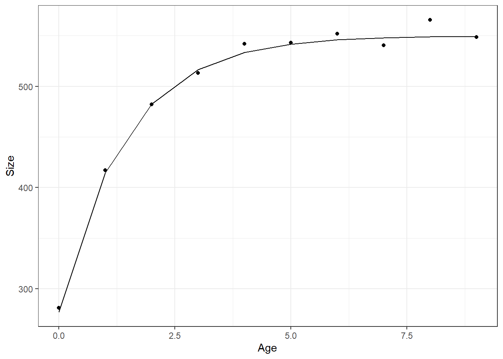
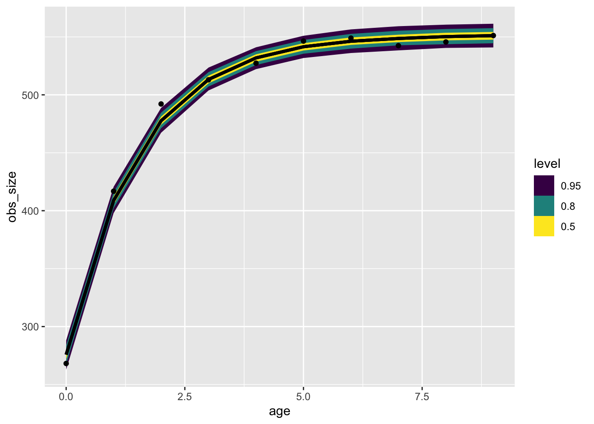

library(targets)
library(ggplot2)
library(tidyverse)
library(tidybayes)
suppressPackageStartupMessages(library(brms))Growth when you know the age
We’re doing a lot of work with growth equations these days! This is how to use brms to fit the growth of an animal when we know:
the birth year
size at each year (measured as the length of a leg)
time
We’ll start with the classic VB growth equation that has been in several other posts:
\[ L_t = L_0e^{-rt} + L_\infty(1 - e^{-rt}) \tag{1}\]
The model we use will resemble the others as well:
\[ \begin{align} \text{Measurements} &\sim \text{Normal}(L_t, \sigma_{meas})\\ L_t &= L_0e^{-rt} + L_\infty(1 - e^{-rt}) \\ L_0 &\sim ...\\ L_\infty &\sim ...\\ r &\sim ... \end{align} \]
Simulating data
I’m starting off with a function to simulate data; this will make it easy to repeat experiments with this model.
simulate_one_growth_known_age <- function(age, r,
Lmax,
size_at_first,
sd_obs){
tibble(age = 0:age,
size = size_at_first * exp(-r * age) + Lmax * (1 - exp(-r * age)),
obs_size = rnorm(n = length(age), mean = size, sd = sd_obs))
}one_animal <- simulate_one_growth_known_age(9, Lmax = 550, size_at_first = 277, r = .7, sd_obs = 6)
one_animal |>
ggplot(aes(x = age, y = obs_size)) +
geom_point() +
theme_bw() +
geom_line(aes(y = size)) +
labs(x = "Age", y = "Size") 
Nonlinear modelling with BRMS
There are three steps to defining and elementary model with brms:
- write the model
- write down some priors
- condition the model on data
In practice there are many more steps, including prior predictive checks to make sure our priors make sense. In this post I’m going to focus on the mechanistic how-to of fitting a nonlinear model in brms and I’ll come back to Prior Predictive checks, which I love, in another post.
First we define the model, here we need to indicate what are parameters by doing a ~1 after each. Yes it is a formula with multiple little formulae inside it! Feel the power flow through you.
vb_form <- bf(obs_size ~ startsize * exp(-growthrate * age) + maxsize * (1 - exp(-growthrate * age)),
startsize ~ 1,
growthrate ~ 1,
maxsize ~ 1,
nl = TRUE,
family = gaussian())
get_prior(vb_form, data = one_animal) prior class coef group resp dpar nlpar lb ub
student_t(3, 0, 22.6) sigma 0
(flat) b growthrate
(flat) b Intercept growthrate
(flat) b maxsize
(flat) b Intercept maxsize
(flat) b startsize
(flat) b Intercept startsize
source
default
default
(vectorized)
default
(vectorized)
default
(vectorized)vb_prior <- c(
prior(exponential(1), class = "sigma"),
prior(normal(0,1), nlpar = "growthrate", lb = 0),
prior(normal(550, 20), nlpar = "maxsize", lb = 0),
prior(normal(200, 50), nlpar = "startsize", lb = 0)
)
vb_model <- brm(formula = vb_form,
prior = vb_prior,
data = one_animal,
chains = 2,
file = here::here("posts/2022-11-21-growth-curve-known-age/vb_model.rds"))one_animal |>
tidybayes::add_predicted_rvars(vb_model) |>
ggplot(aes(x = age, dist = .prediction)) +
stat_dist_lineribbon() +
geom_point(aes(x = age, y = obs_size), inherit.aes = FALSE) Warning: Using the `size` aesthietic with geom_ribbon was deprecated in ggplot2 3.4.0.
ℹ Please use the `linewidth` aesthetic instead.Warning: Unknown or uninitialised column: `linewidth`.Warning: Using the `size` aesthietic with geom_line was deprecated in ggplot2 3.4.0.
ℹ Please use the `linewidth` aesthetic instead.Warning: Unknown or uninitialised column: `linewidth`.
Unknown or uninitialised column: `linewidth`.
summary(vb_model) Family: gaussian
Links: mu = identity; sigma = identity
Formula: obs_size ~ startsize * exp(-growthrate * age) + maxsize * (1 - exp(-growthrate * age))
startsize ~ 1
growthrate ~ 1
maxsize ~ 1
Data: one_animal (Number of observations: 10)
Draws: 2 chains, each with iter = 2000; warmup = 1000; thin = 1;
total post-warmup draws = 2000
Population-Level Effects:
Estimate Est.Error l-95% CI u-95% CI Rhat Bulk_ESS
startsize_Intercept 275.83 4.47 266.81 284.49 1.00 1050
growthrate_Intercept 0.66 0.03 0.61 0.72 1.00 918
maxsize_Intercept 551.62 2.43 546.94 556.62 1.00 814
Tail_ESS
startsize_Intercept 866
growthrate_Intercept 796
maxsize_Intercept 765
Family Specific Parameters:
Estimate Est.Error l-95% CI u-95% CI Rhat Bulk_ESS Tail_ESS
sigma 4.51 0.96 3.05 6.76 1.00 899 951
Draws were sampled using sampling(NUTS). For each parameter, Bulk_ESS
and Tail_ESS are effective sample size measures, and Rhat is the potential
scale reduction factor on split chains (at convergence, Rhat = 1).